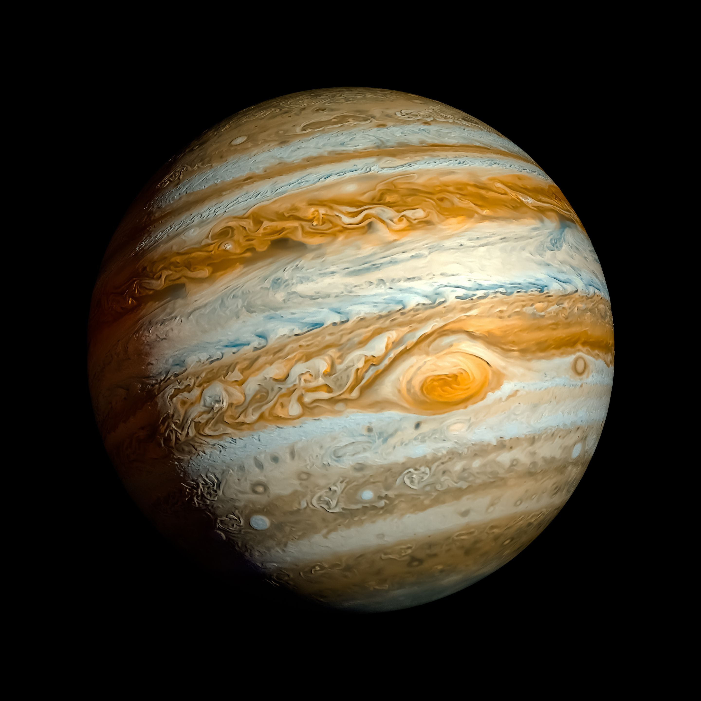
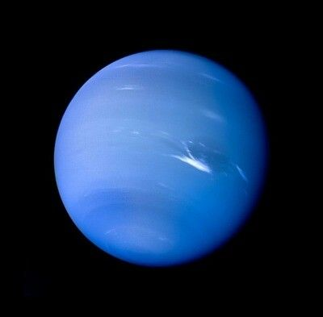

Are U' Ready?
.png)
.png)
.png)
.png)
"Somos polvo de estrellas-CarlSagan"
Objetivo de la página
¿Alguna vez te has preguntado...de que estamos hechos? Estamos hechos de polvo de estrellas, el valor de la probabilidad que había en el
universo de que nosotros existieramos era casi nula, y aun así aquí estamos,
hechos de particulas que coexistieron en nuestro sistema solar, entonces... ¿porqué no aprender más de él?
,explorar entre nuestros pasados y saber de donde vinimos.
El objetivo de esta página radica en conocer el lugar en el que vivimos, en el que vivieron
nuestros antepasados, y en el que vivirán nuestras futuras generaciones.
El sistema solar
Es un sistema planetario cuya estrella central es el Sol, alrededor del cual orbitan o giran varios planetas, planetas enanos y otros cuerpos celestes por efecto de la fuerza de gravedad. El sistema solar tiene 4568 millones de años y está localizado en la Vía Láctea. El sistema planetario conocido más cercano es Alfa Centauri, situado a unos 4,37 años luz (41,3 billones de kilómetros) de nuestro Sol. A su vez, la estrella más cercana sería Próxima Centauri (probablemente del sistema Alfa Centauri), situada a aproximadamente 4,22 años luz.
Planetas
Mercurio
Mercurio fue nombrado de esta manera en honor a Hermes, el mensajero de los dioses griegos del Olimpo. Más tarde los romanos lo bautizaron, tal y como ocurre con el resto de los planetas, con el equivalente en su mitología para los dioses griegos, en este caso Mercurio. Y con ese nombre ha llegado hasta nuestros días. Con un tamaño tan solo un poco mayor al de nuestra luna, es el planeta más pequeño del sistema solar y el más cercano al Sol. Se trata del menor de los planetas rocosos del sistema solar y de manera similar a la Luna, presenta una superficie plagada de cráteres, en parte, debido a la finísima y casi ausente atmósfera (exosfera) que le rodea. Con una velocidad de 170.5030 kilómetros por hora, también se trata del planeta que viaja más rápido a través del espacio -de aquí su nombre- ya que la velocidad de un planeta incrementa con su cercanía a la estrella que orbita.
Venus
Solo tras el Sol y la Luna, Venus es el objeto más brillante que se puede ver en el firmamento desde la Tierra. Esto propició, ya desde la antigüedad, que por su brillo y belleza los romanos asociaran el planeta con la diosa de la belleza y el amor, Venus, de la cual recibe su nombre. Parte de la intensidad del brillo de Venus es debido a la cercanía con la Tierra, ya que se trata del planeta que más próximo se encuentra de nosotros. También es el segundo planeta más cercano al Sol. Se trata de otro de los 4 planetas rocosos del sistema solar y debido a la gran similitud tanto en tamaño como en densidad con nuestro planeta, en ocasiones es denominado como el planeta gemelo de la Tierra.
Tierra
Los antiguos griegos denominaron a la Tierra en honor a la diosa Gea, la cual era adorada como la creadora del universo y la madre, tanto de los dioses primordiales, los titanes, como de los primeros humanos. Al igual que sucede con el resto de planetas, posteriormente los romanos la bautizaron con el nombre de su diosa equivalente, Terra, el cual ha transcendido hasta el presente con las evidentes adaptaciones. Nuestro hogar, la Tierra, es el quinto planeta más grande y el tercero en cercanía al Sol del sistema solar. Entre otras cualidades como la rotación de su eje respecto a la elíptica, la composición de su atmósfera rica en oxígeno o la presencia de agua líquida, esta distancia de la Tierra al Sol -situada dentro de la zona de habitabilidad de una estrella- es la responsable de que nuestro planeta sea el único del sistema solar en el que hasta el momento se haya encontrado vida.
Marte
El planeta Marte recibe su nombre en honor a Ares, el dios griego de la guerra. Más tarde los romanos lo bautizaron, tal y como ocurre con el resto de los planetas, con el equivalente en su mitología para los dioses griegos, en este caso Marte. Marte, también conocido como el planeta Rojo, es el más alejado del Sol de los cuatro planetas rocosos del sistema solar, y el segundo más cercano a la Tierra, aunque cuenta aproximadamente con solo la mitad de su tamaño. Se trata de un planeta sencillo de identificar en el firmamento nocturno debido al brillo rojizo que hace honor a su nombre.
Júpiter
La velocidad a la que gira este coloso del sistema solar también es endiablada, pues no solo hay que tener en cuenta que el día en Júpiter dura apenas unas escasas 10 horas mientras que en la Tierra un día dura 24 horas, sino también que su radio es 10 veces mayor que el de nuestro planeta. Esta también es la causa de los fuertes vientos que se producen en la atmósfera de Júpiter, los cuales en el ecuador del planeta pueden alcanzar hasta los 540 kilómetros por hora, dando lugar a las tormentas más impresionantes del sistema solar, como es el caso de la Gran Mancha Roja, una tormenta que según los científicos lleva activa más de 300 años y en la cual cabrían 2 planetas como la Tierra.
Saturno
Saturno es otro de los planetas más grandes del sistema solar, por lo que al igual que Júpiter, recibe su nombre de uno de los dioses más importantes de la mitología para griegos y romanos, quienes respectivamente se referían a él como Cronos y Saturno, y en sendas mitologías fueron padres de Zeus y Júpiter. Cronos y Saturno eran, de hecho, los dioses del tiempo y la agricultura. Saturno es el planeta que a lo largo del año se puede observar durante más tiempo en el firmamento, por lo que la elección de ambas culturas para nombrar a este gigante gaseoso no es una casualidad. Saturno es el sexto planeta en distancia al sol del sistema solar. También se trata del segundo planeta más grande (9 planetas Tierra en fila cabrían a lo largo de la línea de su ecuador) y el otro de los gigantes gaseosos de nuestro vecindario cósmico, aunque al igual que sucede con Júpiter, los científicos creen que podría albergar una núcleo sólido en su interior.
Urano
El dios Urano fue en la mitología griega el dios del cielo. Sin embargo, cuando los griegos se referían al objeto que brillaba en el cielo con este nombre, no se estaban refiriendo a un planeta, si no que creían que se trataba de una estrella. Para constatar que Urano se trataba de un planeta hubo que esperar hasta el año 1781, cuando fue descubierto por Sir William Herschel, quien quiso bautizarlo en honor al rey Jorge III de Inglaterra. Georgium Sidus, el nombre propuesto por Herschel para este gigante de hielo no prosperó, y la comunidad astronómica acordó en el año 1850 que este adoptara el nombre de Urano, un nombre de origen mitológico en consonancia al resto del planetas del sistema solar.
Neptuno
El nombre del planeta Neptuno, dios de los océanos para los romanos, en un proceso parecido al que tuvo lugar con Urano, fue adoptado por consenso dentro de la comunidad de astrónomos. Neptuno fue el primer planeta descubierto mediante cálculos matemáticos, ya que los antiguos, al igual que ocurrió con Urano, pensaban que se trataba de una estrella. Oscuro, frío y regido por vientos supersónicos, el gigante de hielo Neptuno es el octavo y más distante planeta de nuestro sistema solar. Está tan lejos que es el único de los planetas que no es visible desde la Tierra a simple vista.
¡Prueba tus conocimientos!
¿Qué es el sistema solar?
¿Cuántos planetas hay?
¿Qué objetos celestes existen?